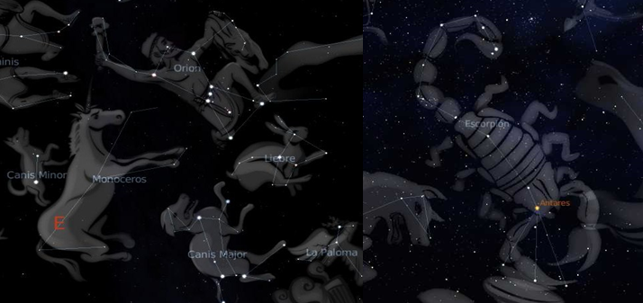
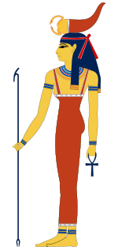
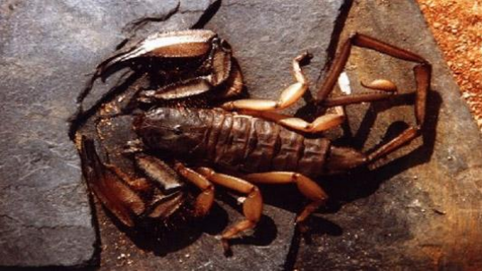
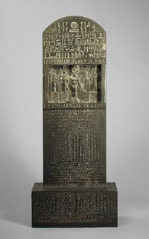
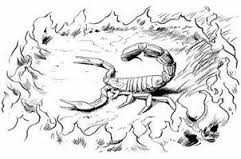

Mitos
Orión y el Escorpión
Hace más de dos mil años, Artemisa, la Diosa de la fertilidad y la naturaleza, hija de Zeus y Leto, decidió acabar con Orión, hijo de Hirieo, que la perturbaba en sus quehaceres y había intentado violarla. De modo que sin otro propósito que acabar con su vida, con ayuda de Gea, la diosa Tierra, envió un escorpión para eliminar a Orión. que lo debilitó. Orión finalmente murío a manos de Artemisa. La leyenda griega cuenta desde entonces que Artemisa, introdujo al escorpión en el firmamento por la ayuda prestada, pero apenada por la muerte de Orión, quiso pedir a su padre, que éste último formara parte del firmamento. Esta leyenda explica por qué la constelación de Escorpio aparece justo cuando Orión empieza a ponerse. El escorpión, aún lo persigue.
Un poco más afondo con el mito y para ayudar a comprender mejor el porque del nombre de las constelaciónes, hablaremos también sobre la participación de Zeus que es lo que realmente le da nombre al firmamento

Orión era hijo de Poseidón, dios del mar, y de Gea, la Madre Tierra.. Orión fue a la isla de Quíos, donde al poco tiempo se enamoró de Mérope, la hija del rey Enopión. Tal era su amor hacia ella que la pidió en matrimonio. Enopión consintió en ello, pero previamente exigió al gigante que demostrara su valor llevando a cabo una difícil misión. Orión tendría que exterminar un gran número de animales dañinos que estaban causando enormes pérdidas en las cosechas de la isla. Una vez que hubo exterminado todas las alimañas, el monarca se negó a cumplir lo prometido. Orión intentó vengarse de Enopión, pero no pudo encontrarlo porque este se refugió en cámara subterránea tan enrevesada, que era prácticamente inescrutable. Entonces, Orión montó más aún en cólera y, enfurecido le dió por matar con sus infalibles flechas y sin piedad alguna todos los animales que le iban saliendo al paso, ya fueran animales feroces o mansas e inocentes criaturas. Tal era el número de bajas que había causado ya, que su madre Gea tuvo que intervenir pidiéndole, sin ningún éxito, que fuera benévolo y reflexivo. Orión hizo caso omiso a las palabras de su madre y siguió en sus trece, a pesar de las repetidas advertencias de Gea.
Un día, cuando el soberbio se encontraba reunido con sus amigos, evaneciéndose de que ni los tigres, ni las panteras, ni aún los leones o las serpientes eran capaz de producirle espanto alguno, desbordó la paciencia de su madre, la cual le mandó un escorpión muy venenoso. Orión, al verlo, no pudo contener su irónica sonrisa ante la ridiculez de aquel insignificante adversario enviado por Gea. El gigante se confió demasiado y el escorpión le picó en un pie con su potente aguijón venenoso. La terrible ponzoña se extendió por toda la sangre del cazador y éste cayó al suelo medio moribundo. Cuando vio que la muerte era ya inminente, pidió auxilio e imploró venganza al todopoderoso Zeus, ya que la muerte que le acechaba era poco glorioso para un personaje de su talante. Le pidió al dios supremo que lo colocaran en los cielos con sus dos fieles perros de caza (Can mayor y Can menor) y una liebre, para que los hombres, cuando miraran hacia arriba en las oscuras noche estrelladas, recordaran sus aventuras como cazador. También le pidió a Zeus el dominio de las tempestades, las tormentas, el hielo y los vientos a fin de poderse vengar así de su madre la Tierra (Gea). El dios fue condescendiente con Orión y atendió sus súplicas. También se encargó Zeus de situar el escorpión en el firmamento pero tuvo cuidado de ponerlo lo más alejado posible del gigante para que nunca más volvieran a enfrentarse. Así pues, cuando Orión desaparece de la bóveda celeste es cuando hace su aparición el Escorpión.
El Antiguo Egipto y los Escorpiones
 Una de las civilizaciones más fascinantes que han existido, la del antiguo Egipto, conserva numerosos mitos y leyendas e incluso documentos históricos que dan fe de la gran relevancia que los egipcios otorgaban a los escorpiones. Selkis, la diosa escorpión, fue una de las más importantes.
La diosa Selkis, del nombre egipcio Serket-Heru, se representaba como una mujer con cabeza de escorpión, o bien como un escorpión con cabeza de mujer.Diosa antigua de los escorpiones y la magia. Simbolizaba el calor abrasador del sol.
Su papel era fundamentalmente benéfico ya que protegía de las picaduras venenosas de escorpiones y serpientes. Se la llamaba "La que facilita la respiración en la garganta", ya que la picadura de este animal produce ahogo; también se la relacionaba con la que posibilita la respiración del recién nacido y del difunto en su renacimiento. En los textos funerarios es la madre del difunto, al que amamanta. Además desempeñaba las funciones de protectora de las fuentes del Nilo y de controladora de la serpiente Apofis, que pretendía atacar la barca del dios Ra.
Junto a las diosas Isis, Neftis y Neit, era una de las 4 plañideras divinas, encargadas de custodiar los vasos canopos y el sarcófago del faraón. Hasta la dinastía XIX esta diosa se representaba mediante un escorpión de agua, aunque a partir de entonces su símbolo fue el del escorpión de tierra.
Sus sacerdotes eran verdaderos médicos y magos, dedicados a la curación de picaduras de animales venenosos.
Es hija de Ra, aunque algunas leyendas locales de Edfú la presentan como madre de Horajti, o como esposa de Horus. En los Textos de las Pirámides tiene como hijo a Nehebkau Se la representa con cabeza femenina y cuerpo de escorpión; sobre la cabeza llevaba unos cuernos con el sol; o también como mujer con un escorpión en la cabeza. En la Dinastía XXI puede aparecer con cabeza de leona, cuya nuca es protegida por un cocodrilo.
A veces se la identifica con Seshat o con Isis. Originaria del Delta, también recibió culto en el Alto Egipto, en Edfú y Per Serket (el-Dakka). Su fiesta se celebraba el día 7 del mes de Joiak.
Además tenía un papel relevante en la religión, representando a la Diosa Escorpión Selket, a la que se la llamaba “la que hace respirar las gargantas” debido posiblemente a los primeros síntomas de ahogo que provocaba la toxina del escorpión a quien picaba.
Otro dato interesante, es que se honraba y glorificaba a los halcones, (representados por Horus), pues estos se alimentaban de escorpiones.
Leyendas
La Tortuga y el Escorpión
Estas leyendas son unas de las primeras referencias que se conocen sobre los escorpiones. Sin duda alguna, hace alusión a la capacidad de estas criaturas para acabar con la vida humana, una connotación negativa patente ya desde entonces.
Este atributo maligno, persiste en la actualidad. Son numerosos los científicos que han querido atribuir a estos artrópodos en el descubrimiento de nuevos taxones para la ciencia. Géneros que se correponden con esta negativa idea son más que conocidos.
Sin ir más lejos, el género Pandinus, traducido al castellano atribuye la palabra “terrible” y Hadogenes, “venido o nacido del Hades, del infierno.”(Aquí abajo, podeis ver a Hadogenes troglodytes).

Los cuentos populares también reflejan la malversión y el rechazo hacia éstos. Un ejemplo muy claro es la leyenda africana de la Tortuga y el Escorpión, en la que se variado la naturaleza del primero; en algunas fábulas es un sapo y en otras una rana.
En cualquier caso, es interesante leerla y apreciar las aclaraciones del autor, todas salpicadas de prejuicios.
Hace algún tiempo, una pequeña tortuga se encontraba retozando en un riachuelo disfrutando de una soleada mañana, sin ninguna preocupación, al poco tiempo escucho que una voz la llamaba desde una de las orillas del río -Tortuga, tortuguita, ven por favor-, como todos sabemos, las tortugas de río son básicamente animalillos de buen corazón, así que sin dudarlo un segundo la tortuga se acerco confiadamente a la voz que la llamaba
Al llegar a la orilla del río, la tortuga se llevo un gran susto al advertir que el dueño de la voz que la llamaba era un escorpión negro, como todos sabemos esos animales son extremadamente peligrosos por lo que la tortuga (ingenua al fin y al cabo) le pregunto sin acercarse a la orilla:
-Que quieres de mi escorpión?- a lo que el otro respondió .
-Pequeña tortuga, tengo una urgencia y debo cruzar hacia el otro lado del río, serias tan amable de ayudarme a cruzar llevándome sobre tu lomo?-
La tortuga solo tardo un instante en pensar que ahí había gato encerrado y rápidamente le contestó:
-No te llevo, por que eres un escorpión y en cuanto me acerque a ti, me vas a picar y me vas a matar
Al escuchar estas palabras el escorpión rompió a llorar a mares y usando un tono lastimero le dijo a la tortuga:
-En verdad necesito cruzar al otro lado y no tengo tiempo para dar un rodeo, es una pena que no me quieras ayudar solo por que soy un escorpión, yo no tengo la culpa de ser lo que soy
La pobre tortuga, que era de buen corazón, estuvo a punto de ayudarle al escuchar el llanto del que pedia su ayuda, pero recordó los escorpiones son animales que son capaces de picar a otro y matarlo solo por placer, así que comenzó a alejarse y le dijo al escorpión:
-Lo siento mucho, pero no debo de ayudarte, por que me matarías
El escorpión desesperado le dijo:
-Tortuguita, por favor espera, te propongo lo siguiente; Tu sabes que yo no se nadar verdad?
-Si- Contesto la tortuga un poco intrigada.
-Y sabes también, que lo único que a mi me interesa es cruzar al otro lado verdad?
-Si- Dijo una vez mas la tortuga.
-Pues entonces que te parece si solo te acercas a la orilla lo suficiente para que yo pueda llegar a tu lomo mediante un salto, de ese modo estarás segura de que no te puedo picar cuando te me acerques, también estarás segura de que no te puedo picar cuando me estés llevando, por que si te hundes tu, pues yo también me hundiría y moriría junto contigo, además al llegar a la otra orilla me dejas a la distancia justa de un brinco y si desperdicio mis fuerzas en tratar de picarte, pues no voy a llegar a la orilla y me voy a ahogar Dijo el escorpión y por último agregó
-Por favor tortuga, por favor hazme ese gran servicio, sabes que si te pico pierdo yo tanto o más que tu
La pobre tortuguita no sabia que hacer y repaso mentalmente el plan del escorpión y peso para sus adentros “Debe estar muy desesperado para pasar al otro lado ya que esta poniendo su vida en mis manos” y sin mas, se decidió.
-Esta Bien- Dijo -Súbete, te llevo
El escorpión muy agradecido salto a lomos de la tortuga y esta inicio su recorrido silbando una alegre melodía, sin embargo al llegar a la mitad exacta del río la tortuga sintió el terrible piquete del escorpión en la base de su cuello, atónita al tiempo que sentía como su cuerpo se entumecía y comenzaba a hundirse solo pudo voltear a ver al escorpión y preguntarle
-¿Que ha pasado?
a lo que el escorpión respondió antes de ahogarse
-No lo pude evitar, es mi naturaleza…-
África, (Autor desconocido).
Sin duda, ésta fábula hace reflexionar al lector.
Leyendas del Antiguo Egipto
Isis y los siete escorpiones
En unas escavaciones llevadas a cabo en Alejandría se encontró la Estela de Metternich (Actualmente en el Museo Metropolitano de Nueva York), un documento egipcio fechado en el reinado de Nectanebo II, en el que se relata la historia de la diosa Isis y los siete escorpiones.
 Osiris, el buen díos era querido por todos. Los egipcios le veneraban y esto supuso la envidia de Seth. Isis se había casado con Osiris y engendraron un hijo por nombre Horus. El odio de Seth se volvería contra esta familia divina. Seth quiso separarlos y aun cuando Isis y Horus se escondieron acabaron por ser capturados por el malvado Seth.
Isis inició su huida en la noche, cuando Ra descendía en el cielo. Con ella siete escorpiones, regalo del Gran Thot, le ofrecían compañía y protección. Isis les hablaba en voz alta y ellos obedecían. Los llamaba a cada uno por su nombre y estos eran Tefen, Befen, Mestet, Mestetef, Matet , Petet y Tetet. Mantened vuestro rostro en el camino, les decía, no prestar atención a ninguna criatura sea noble o plebeya, que nadie nos aparte de nuestro camino.
En la huida continua, Isis llegó a Per-sui. Cuando llegó cerca de las casas de los hombres que habitan las marismas, pasó cerca de la vivienda de una rica mujer llamada Usert. Ella se encontraba en la puerta. Usert vio llegar a la Diosa, cansada y dolorida, pero cuando Isis se acerco le cerró la puerta por miedo a los siete escorpiones que la seguían.
Isis continuó su camino y encontró otra mujer en las marismas, que le abrió la puerta de su casa, y aquí pudo descansar. Una vez la Diosa estaba a salvo, los escorpiones se encontraron disconformes con Usert, la mujer que denegó ayuda a la Diosa, así que enviaron la fuerza de su veneno a la casa de Usert, donde su hijo cayó enfermo. Los escorpiones entraron en su casa y reptando hacia el, inyectaron su aguijón siete veces el niño enfermó y se declaró fuego en la casa.
Usert lloraba, su corazón estaba triste pues no tenía noticias de su hijo. Vagó por el pueblo llorando de dolor, pero nadie acudió a su llamada. A oídos de la Diosa llegaron sus lamentaciones, Isis con gran compasión volvió a ayudarla, pues el niño no tenía ninguna culpa. Las dos volvieron hacia la casa donde encontraron al niño casi muerto.
Isis, la gran maga, la que hace despertar de la muerte dijo las palabras poderosas:
‘¡Ven a mí, ven a mí! Observa mi boca que da la vida, que tiene el poder de destruir a las malas criaturas con la emisión de ciertas palabras, que mi padre me ha dado a conocer. Soy su amada hija, la descendencia de su cuerpo’.
El niño estaba frío, inmóvil y sin vida, con lo que recitó el hechizo mágico contra el veneno de escorpión.
‘¡Oh veneno de Tefen, sal de ese cuerpo y cae sobre la tierra! Veneno de Befen, no avances, no penetres mas, sal fuera de ese cuerpo y cae sobre la tierra. Porque yo soy Isis, la Gran Maga, Señora de los Hechizos. Practico la magia y sé qué palabras pronunciar. Escuchadme, vosotros, todos los reptiles que poseéis el poder de morder o picar. ¡Cae, oh veneno de Mestet! ¡Quédate atrás, oh veneno de Mestetef! ¡No circules veneno de Petet y Tetet! ¡No te acerques, veneno de Matet!
“No clames a los Tesheru (los Rojos), gira tu mirada lejos de las nobles señoras que están en sus casas, gira tu cara hacia la tierra hasta que lleguemos a los lugares en que ocultar en Jeb. El niño vivirá, el veneno morirá. Ra vivirá y el veneno morirá. Como Horus se hizo fuerte por la intervención de su madre, así el que ha sido herido se hará fuerte también.”
El niño se salvó, El cielo envió agua sobre la casa, gran prodigio pues no era época de lluvias. El fuego se extinguió. El cielo estaba contento por las palabras de Isis.
Usert, avergonzada por haber denegado la ayuda cuando Isis la necesitaba, pidió perdón con gran fervor a la Diosa por haber salvado la vida de su hijo. Toda su fortuna la ofreció a la Diosa, que otorgó ésta a la pobre mujer que le dio cobijo en casa.
Desde entonces los egipcios, hacen una masa de harina de trigo y sal, que depositan sobre las picaduras de escorpión. Pronuncian las palabras mágicas, se encomiendan a Isis, la Señora de la magia y los hechizos y curan éstas heridas.
Adaptación de la leyenda de Isis y los Siete escorpiones escrita sobre la Estela Metternich
El Escorpión y el Maestro Chino
Un maestro oriental que vio cómo un escorpión se estaba ahogando, decidió sacarlo del agua, pero cuando lo hizo, el arácnido le picó.Por la reacción al dolor, el maestro soltó al animal, que cayó al agua y de nuevo estaba ahogándose. El maestro de nuevo intentó sacarlo y otra vez el bicho le volvió a picar.Alguien que había observado todo, se acercó al maestro y le dijo:
- Perdone, ¡pero usted es terco! ¿No entiende que cada vez que usted intenta sacarlo del agua lo picará?
- La naturaleza del escorpión es picar y eso no va a cambiar la mía, que es ayudar - respondió el maestro.
Y entonces, ayudándose de una hoja, el maestro sacó al alacrán del agua y le salvó la vida.
China (Anónimo).
Creencias sin un ápice de veracidad
Una creencia sin un ápice de veracidad es la típica que asegura que si se rodea un escorpión en un círculo de fuego, éste acaba suicidándose flexionando el metasoma y picándose él mismo con su telson.
El veneno de un escorpión es inócuo para el mismo y los especímenes de la misma especie, lo que permite a éstos que ingieran sus presas, ya que su principal propósito es éste, emplear los enzimas de las toxinas que conforman el veneno, para destruir los tejidos de sus presas y poder alimentarse de éstas.
 Esta creencia es muy común, pero quienes aseveran haber visto este efecto, (profusamente poético para un ser vivo cuya capacidad de raciocinio es bastante limitada y se basa exortativamente en conductas instintivas y respuestas simples a los estímulos) en realidad han cometido un error de observación, pues el desafortunado escorpión al ser sometido a altas temperaturas, se excita de forma excesiva y efectua movimientos espasmódicos con el metasoma con lo que en estas contorsiones parece que se hiere, se inocula su propio veneno y de repente, a los pocos segundos queda muerto, pero no es debido a esto, sino a causa de un rápido fenómeno de coagulación de las albúminas de la hemolinfa, las principales proteínas de ésta, que se coagulan al someterse a temperaturas elevadas.
Por estas razones, resulta más que absurda que un animal acabe suicidándose, cuando de lo que tratará en todo momento será de escapar y sobrevivir.
Como conclusión, debemos entender pues, que los escorpiones, a pesar de la animadversión que el ser humano ha demostrado tenerles desde sus orígenes no son organismos malvados y terroríficos, nacidos para picar e intentar acabar con la vida del ser humano, pues sólo se dan accidentes cuando no se toman precauciones y se cometen atrocidades, como la construcción de viviendas o núcleos poblacionales cerca de el biotopo de éstos.
No sólo debemos tener en cuenta que en su manipulación y al encontrarnos con uno, es preferible extremar las precauciones y mantenernos alerta debido a que tienen la capacidad de inocular veneno, sino además la titánica empresa que desempeñan al librarnos de infinidad de insectos y otros artrópodos también considerados como molestos para el hombre, sin olvidarnos de la inestimable ayuda que aportan en el campo de la medicina, donde se han efectuado importantes avances en la investigación de nuevos tratamientos para enfermedades tan degenerativas como el cáncer o el sida entre otras.